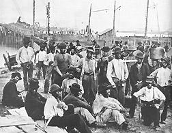
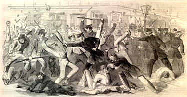

|
The family stood at the center of antebellum black life, slave and free. When
black men shouldered arms for the Union, they continued no less to be husbands,
fathers, sons, and brothers. Indeed, in some respects military service
intensified the significance of kinship bonds and family responsibilities.
Familial ties influenced the initial decision to enlist, shaped perceptions of a
soldier's duties and rights, and created both new opportunities and new
difficulties for the men and their kin. A war so intimately connected with the
fate of black people inevitably affected black soldiers' families.
Black men contemplating enlistment had to weigh the opportunity to strike a blow
for freedom and the prestige gained by military service against the demands of
family. For Northern and border state freemen, who first faced this choice in
1863, the economic needs of their families rendered the decision especially
difficult. Free blacks had long been limited to the most menial occupations, and
the security of their families depended upon the income of all adult members.
Prolonged absence of husbands and sons, and the possibility of irrevocable loss
through death in the service, thus threatened the fragile economic base of black
domestic life, while also imposing the emotional pain of wartime separation.
Drafted free blacks, torn from their families with less ceremony, faced similar
difficulties without even the possibility of choice. Still, military service
offered potential gains. Army pay promised to be more regular than the ordinary
wages of most casual laborers, and free-state bounties, tendered as inducements
to volunteer, often equaled a year's wages. Black families balanced these
economic considerations with ideological, emotional, and personal ones as they
debated enlistment, but for the men who joined the army, as for those who
remained at home, family ties continued to frame their actions. Kinsmen
frequently enlisted together, creating military units in which brothers,
cousins, fathers, and sons marched side by side. The characterization of the war
as a "brothers' war" had a distinctive meaning for many black families.
|

Longshoremen working in a Union shipyard during the war.
|
Wartime inflation worsened the always-precarious material circumstances of free
black households, and an absent soldier's pay could not be depended upon to
alleviate his family's plight. Perhaps no army practice contributed more
blatantly to the distress of free black families than the failure to pay
soldiers promptly. Many soldiers remained unpaid for months on end. That the
army pay, when received, was for much of the war less than that of white
soldiers only aggravated nerves rubbed raw by the impoverished conditions of
loved ones at home. Black soldiers and their relatives deluged the War
Department with pleas for assistance to hard-pressed families; most petitions
shunned charity, seeking merely the pay to which a soldier was justly entitled
or the release from service of a soldier whose family desperately required his
support.
Free blacks in the Union-occupied South faced even greater difficulties than
those in the Northern states. Many free black men had married slave women and
could live with or visit their families only at the slave owner's sufferance.
When such men enlisted in the federal army, masters revoked visitation
privileges and even vented their fury by abusing the soldiers' enslaved
relatives. In New Orleans, home of a large community of yens de couleur, the
slave families of enlisted freemen faced, in addition, a special form of urban
harassment--eviction notices.
The federal government's decision to recruit slaves as well as free blacks
increased the number of families exposed to retaliation by angry masters. In
those parts of the Confederate South where slave owners remained in residence
after Union occupation--notably Louisiana and Tennessee--enlistment left the
families of slave soldiers under the control of their masters. By the terms of
the second Confiscation Act, the 1862 Militia Act, and the Emancipation
Proclamation, some of these families held claims to freedom, but others belonged
to Unionist masters exempt from the liberating provisions. Whatever their legal
position, most continued to labor under conditions not markedly different from
those of bondage. Still other black soldiers donned federal uniforms only after
first escaping from slavery in Confederate-held territory. Successful flight
often meant leaving behind family members less able to hazard a difficult
journey. Relatives thus consigned to continued servitude stood constantly at
risk of punishment because their men had joined the army of liberation.
Nearly all families of border-state black soldiers likewise remained in bondage.
Exempted from the Emancipation Proclamation by virtue of their adherence to the
Union, border-state slave owners found sustenance for their authority in law and
military policy, as well as in practice. Their power unchallenged, these masters
manipulated slave family ties first to discourage enlistments and then to vent
their wrath against the tens of thousands of men who nevertheless dared to join
the army. Masters threatened to turn out helpless family members and often
refused to support dependents once the able-bodied men had enlisted. They also
cut rations, assigned slave women and children to tasks ordinarily performed by
men, and punished them for communicating with soldier husbands and fathers.
The abuse of family and friends angered black soldiers, many of whom had but
recently felt the sting of the master's lash. Generally they expected the army
to intervene on their families' behalf, and they regularly carried reports of
ill treatment to sympathetic officers, some of whom reproved culpable masters by
letter or appealed to superiors for punitive action. With an assumption of
simple entitlement and justice, some black soldiers requested that the army
forcibly liberate their still-enslaved kin. Others, propelled by the new power
and authority acquired with the wearing of Union blue, threatened offending
masters directly. Such challenges at once contested the moral basis of human
bondage and confirmed the worst fears of the slaveholders. The threat of
unilateral black action forced federal officials to confront the question of
freedom for the slave families of black soldiers. But while many army officers
did what they could to compel decent treatment, federal authorities moved
slowly. Congress did not formally declare the freedom of all black soldiers'
families until March 1865.
Many slave families escaped bondage intact. On the coasts of South Carolina,
North Carolina, and Virginia, masters fled at the approach of the Union army,
leaving their slaves behind. Throughout the Mississippi Valley and from the
interior of the eastern slave states, slave families often managed to flee
together into Union lines or to reconstitute themselves after individual
escapes. These circumstances eliminated the prospect of retaliation by masters
if the men enlisted, but cast black families upon the uncertain mercy of the
Union army.
Having maintained family integrity through slavery and its collapse, blacks
proved reluctant to entrust family security to their Yankee liberators. Army
recruiters soon discovered that willingness to enlist hinged upon offers of
protection for families. As a result, in the Union-occupied South the government
promised either to care for black women, children, and elderly dependents in
contraband camps or to supervise free labor arrangements with local planters and
Northern lessees, specifying wage payments and prohibiting abuse. To stimulate
black enlistment, some recruiters stipulated that black soldiers would serve as
contraband camp guards, thereby assuring blacks that their families would remain
together and formalizing the role of family protector. General Benjamin F.
Butler, never hesitant to seize the initiative, issued perhaps the fullest
pledge of family protection in December 1863. His order promised Virginia and
North Carolina blacks that the family of every enlistee would receive a
certificate entitling dependents to government support while the men served in
the army. Despite such guarantees, the integrity of black family life seldom
ranked among the military's highest priorities, and promises often went
unfulfilled. With the cessation of fighting in the spring of 1865, the army
violated Butler's explicit bargain, although protests from black soldiers and
Northern missionaries secured temporary respite from termination of ration
issues.
In the absence of reliable federal support, thousands of black soldiers'
families improvised homes in the vicinities of the camps or garrisons where the
men were stationed. In south Memphis, on the outskirts of Vicksburg, at the
fringes of nearly every military post where black soldiers performed duty,
sprawling "villages" of shanties and cabins housed soldiers' kinfolk. Women,
children, and the aged supported themselves as best they could, often as
laundresses, cooks, and in other army-related employment. Proximity to the
husband's camp facilitated family visits and permitted husbands to assist in the
families' precarious maintenance. The swollen population of these shanty towns
made it difficult, however, for everyone to earn a living, and army policy
continually disrupted family life. In the eyes of army officers, these black
families constituted a perpetual nuisance, an ever-present source of
"demoralization," which distracted the men from their duties. Certainly, men
whose families lacked adequate food and shelter performed their duties less than
assiduously. They took unauthorized leave to attend to domestic needs; on
occasion they stole army rations or other property to feed, clothe, or house
their families; they even resorted to violence to protect loved ones. Repeated
army attempts to remove the families from jerry-built settlements to more
distant and closely regulated camps brought resistance by the families and
forcible intervention by the soldiers.
Army officials displayed their lack of concern for black family life in other
less brutal, but nonetheless painful ways. Ridiculing the idea that black men
and women knew anything of marital obligations, white officers disparaged the
concern and affection soldiers lavished on their families and vilified the
soldiers' wives as "whores" and "bitches." In callous disregard of the intimate
ties and obligations of their men, some officers restricted contact between
black soldiers and their families, while installing their own wives and
mistresses near camp.
Even under the best of circumstances, army life created new difficulties for
black families. General illiteracy, especially within the units composed of
former slaves, hampered communication among relatives separated by great
distance, while army movements and heavy duties limited time for letter writing.
Irregular news from loved ones compounded the anxieties of a soldier's life and
the concerns of those at home. Still, many families managed to correspond with
enough frequency that any unexplained hiatus in communication immediately
spawned fears of illness, capture, or death. Wives, mothers, and other relatives
took their worries to the War Department and other government officials; anxious
inquiries about a soldier's safety revealed both the accustomed regularity of
family correspondence and the alarm created by lack of news.
|

Many family members of black soldiers were
attacked during the New York City Draft Riots.
|
Wartime separation inevitably strained family relationships, and some never
recovered. Death severed many marriage bonds. Among the living, one or both
partners might choose to abandon established relationships. Distanced from their
homes, some black soldiers formed new affections, and by the same token, some
wives grew attached to other men. Invoking strongly held convictions against
adultery, both soldiers and their wives frequently alleged a spouse's prior
infidelity as justification for their own new liaisons. Others remained
unattached and bore their grief alone. In many cases, estranged wives sought
assistance from the army or Freedmen's Bureau in securing support from former
husbands for themselves and the children of now-defunct unions. Similarly, some
soldiers tried to remove their children from the custody of wives who had
betrayed them.
If army service rent the fabric of some black marriages, other husbands and
wives seized wartime opportunities to place their relationships on firmer legal
footing. Thousands of black soldiers and their wives publicly reaffirmed
marriages established during slavery, often unions of long duration. Army
chaplains and Northern missionaries took special interest in formalizing the
marriage relations of black soldiers, but the ex-slaves themselves pressed for
ceremonies and legal registrations that at once celebrated the new security of
black family life and brought their most intimate ties into conformity with the
standards of freedom.
Unmarried black soldiers also affirmed the significance of marriage and kinship
relations. As in most armies, the Union's black troops were younger than the
general population. Often military service took them great distances from where
they had been born and raised. Far from home and often lonely, many youthful
black soldiers courted and married while in the service. In doing so, they
confirmed, traditional domestic values and established families of their own.
Army chaplains customarily discouraged such alliances, urging young single
soldiers to postpone marriage until the end of the war. Other white officers saw
in the courtships of black soldiers nothing more than licentiousness and even
labeled the soldiers wives and sweethearts "common place women of the town."
Despite the absence of official endorsement, young black soldiers and their new
wives, mostly ex-slaves, ratified kinship beliefs forged during slavery. With
their marriages they carried the family values of slaves into the first
generation of freedom.
Source: Freedmen and Southern Society Project, Freedom, A
Documentary History of Emancipation, 1861-1867 (New York: Cambridge
University Press, 1985), 656-61.
|